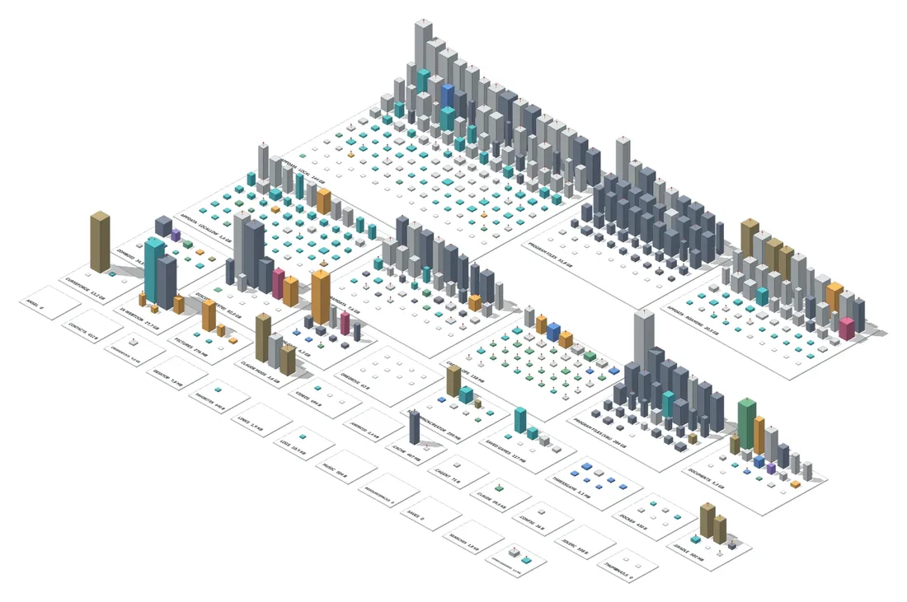

Tu disco duro convertido en una ciudad en 3D. Cada carpeta es una manzana, cada edificio un bloque de archivos, y su altura es lo que pesa. Para ver de un vistazo qué ocupa espacio y decidir qué se va.

La ciudad de un PC real: cada manzana es una carpeta
Atlas de mi PC es una aplicación de escritorio para Windows que censa el disco y lo dibuja como una maqueta urbana navegable. En vez de una lista de carpetas con números, ves un mapa: lo grande se nota porque es alto.
Corre por completo en tu equipo. Un pequeño servidor local en Python hace el censo y una página con three.js dibuja la ciudad; el servidor solo escucha en 127.0.0.1, así que nada sale del computador.
Recorre las unidades leyendo solo nombres, tamaños y fechas. No abre ni modifica ningún archivo.
Entras de una carpeta a sus subcarpetas, nivel por nivel, con una ficha de cada bloque: tamaño, archivos, tipos y última modificación.
Código, imágenes, video, audio, documentos, comprimidos, ejecutables y datos se distinguen por color.
Señala carpetas de basura conocida y bloques grandes que llevan mucho tiempo sin tocarse.
Busca archivos repetidos a partir de un tamaño mínimo.
Solo cuando lo confirmas, envía a la Papelera de reciclaje. Las zonas del sistema y las raíces de disco están protegidas.
Traslada una carpeta pesada a otra unidad y puede dejar un enlace en su lugar.
Se empaqueta con PyInstaller en un ejecutable que abre la ciudad en su propia ventana.
src del repositorio.Abrir Ciudad.bat (o python ciudad.py).Crear EXE.bat.